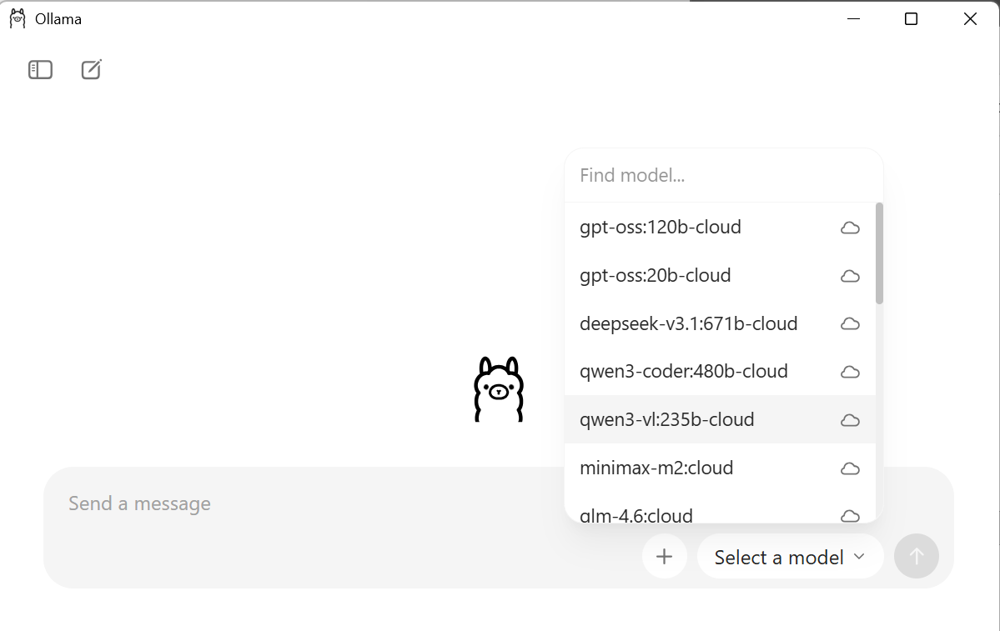
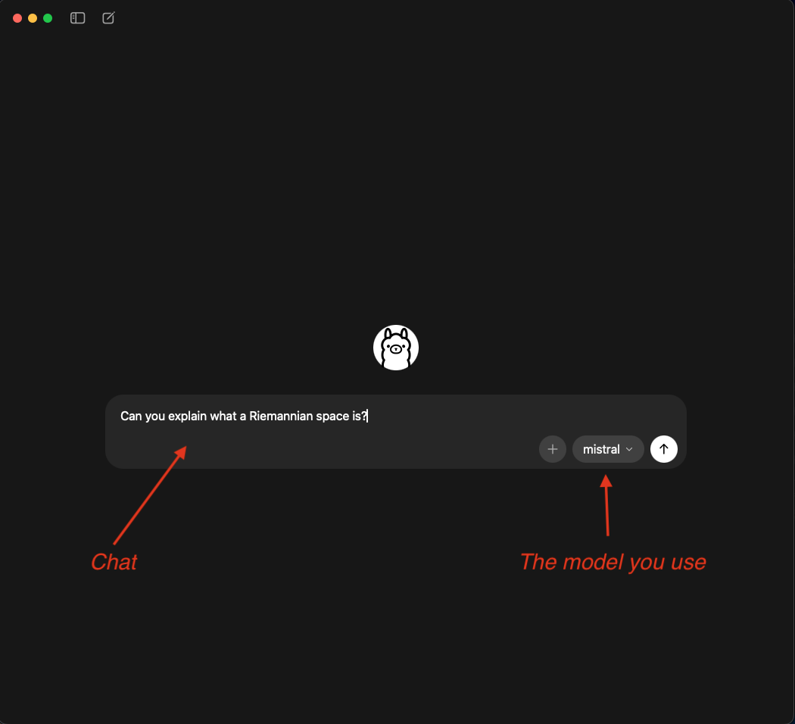
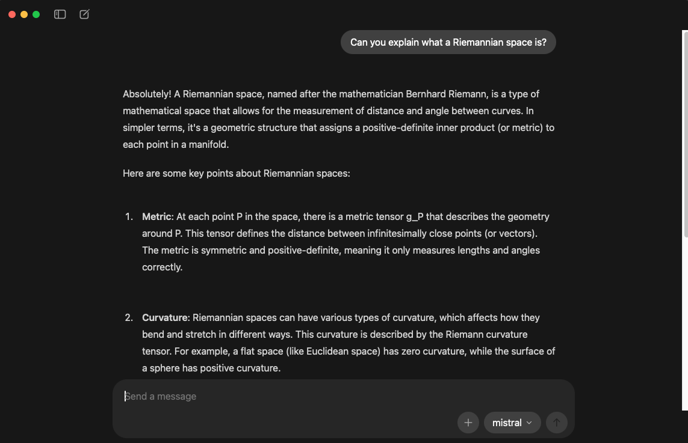
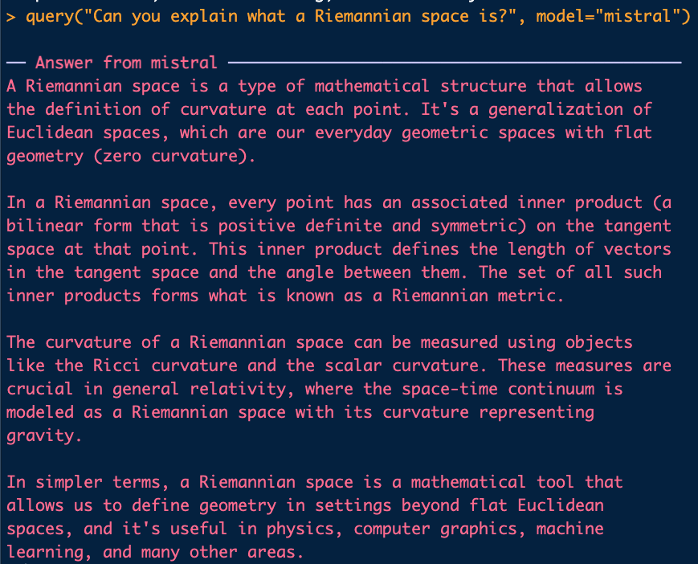
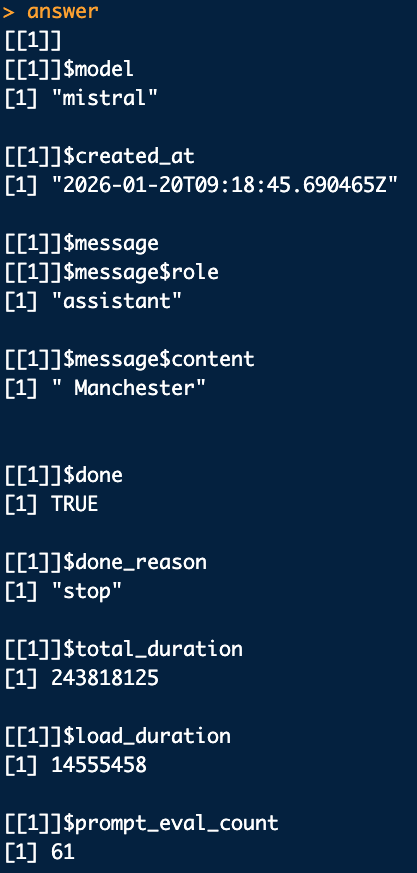
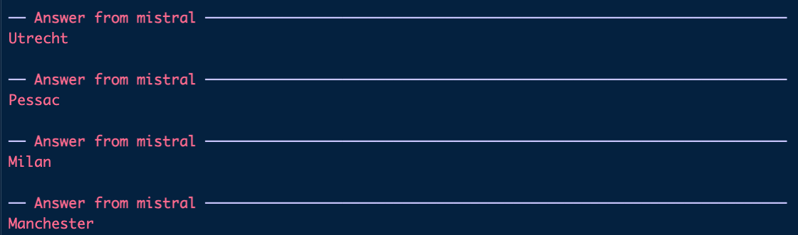
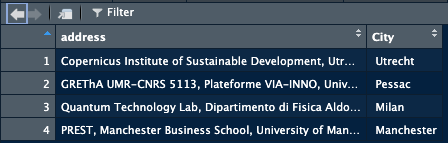
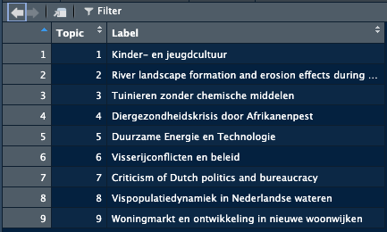
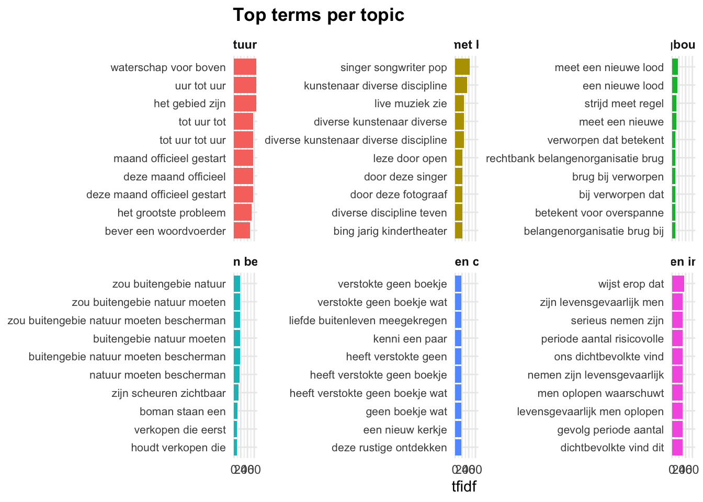

library(rollama)
query("Can you explain what a Riemannian space is?", model="mistral")Using LLMs in R for data analysis
Install Ollama
To use the Large Language Models in R we need some software to run the models. We are going to avoid python and use something that is a lot more stable: Ollama. Please navigate to this website and download the software: https://ollama.com/download:
This will start the download of the software, it might take a while to downloand (1.2GB) and to install. Once the installation is finished we can continue to the next step.
Now that the software is installed we can launch it and install models. Just as you have access to different AI chatbots (chatGPT, Mistral, Claude, Deepseek) you can use different models in Ollama as well. The difference is that these models are downloaded to your computer and run on your own hardware. No subscription needed. The tradeoff is that these models are smaller and might not be as performant as the bigger models that are available elsewhere. However, for data science tasks, the local models are often more than enough.
Launch the software and you will see the chatbot appear, there is a box that will say “Select a model” in this list you can pick the model you would like to use. Caution! The models are usually multiple GBs each!!

Use the chatbot
Once a model is installed you can use Ollama any other chatbot. Enter a text and it will answer. How fast it answers depends on your hardware. In any case the first question will always take longer because the model needs to be loaded. Subsequent questions will get a faster answer. Select a model and have fun!


Connecting to R
We can leverage the power of Ollama in R by connecting R to Ollama with the rollama package. So let’s fire up Rstudio and install the rollama package. The package will give us full control over the models from R. This means that we can send data from our R environment to the chatbot, with a question and retrieve the response. The rollama package contains a function that allows us to communicate with the model: the query() function. All we have to do is put a string and a model as arguments:

Note that we did not save the response, it was directly shown in the Console. The aim for use is of course to store the results somewhere.
When we store the response in R you will see that the response contains a lot more information than just the text we see displayed. This is an example from a question where we ask the model to extract the city from an address:

The results come in the form of a list. The part we are interested in are in the [[1]]$message$content part of the list. This is the answer of the model. So if we want to automate the usage of this model, for example extract the city from a dataframe of addresses, we access to answer of the model using this reference. For example:
Let’s apply this to an example of a task we often need to perform when it comes to extracting geographical data: extract a city from a text. Let’s create a dataframe with some addresses to work on:
test_data = data.frame("address" = c("Copernicus Institute of Sustainable Development, Utrecht University, The Netherlands","GREThA UMR-CNRS 5113, Plateforme VIA-INNO, Univ. Bordeaux, Pessac, France","Quantum Technology Lab, Dipartimento di Fisica Aldo Pontremoli, Universit`a degli Studi di Milano, 20133 Milano,
Italy","PREST, Manchester Business School, University of Manchester, Oxford Road, Manchester M13
9PL, UK"))Now we want to extract the city from each of these addresses which means going sending the address to the model and extract the city, and store the results.
So in algorithmic terms:
- Load the required tools
- Add a column in the dataframe to store the answer
- Create a question and add the address
- Send question to model
- Store result in df
- Next question -> i.e loop
# Create a column to store results
test_data$City <- NA
for(i in 1:dim(test_data)[1]){
# create the question
question = paste(
"You will be given an address, your job is to extract the city. Answer only with the city,no country, no yapping. This is the address:", test_data[i,1])
# Send question to model and extract the results
# Note here that we use [[1]]$message$content to extract the answer of the model
# from the list of information provided by the model:
answer <- query(question, model="mistral")[[1]]$message$content
# Store the answer
test_data[i,2] <- answer
}As the model runs it will display the results, but they are also stored in the dataframe.

Once finished, the dataframe should look like this:

We have used the model to automate the extraction of city names from addresses.
Use cases
Topic model: Labels
A task where LLMs can come in handy is in automating naming topics that come from a topic model. To do this we basically supply the terms describing the topic to the LLM and ask it to come up with a name for the topic. To increase precision we might give some information on the origin of the data and the domain we are studying.
So let’s run a bertopic model first:
reticulate::use_virtualenv("bertopic_r_env_spacy", required = TRUE)
Bertopic_NL_articles = identify_topics_coord(
LN_dataframe_NL$Article,
model_name = "GroNLP/bert-base-dutch-cased",
n_neighbors = 5,
n_components = 10,
metric = "cosine",
minPts = 10,
assign_by_membership = FALSE
)And then extract the terms:
terms_topic_model <- compute_topic_tf_idf_spacy_py(Bertopic_NL_articles$documents,
doc_col = "doc_id",
topic_col = "cluster",
text_col = "text",
exclude_topics = NULL,
pos_keep = c("NOUN","ADJ", "VERB"),
min_char = 3,
min_term_freq = 2,
top_n = 30,
min_ngram = 3L,
max_ngram = 5L)This will give us a dataframe with terms, per topic with a score. We want to provide, for each topic, the list of terms to the model and get a name for the topic in return. This mean that we have to:
- Create a dataframe to store the results
- First subset to a given topic
- Create a list of terms
- Supply terms to the model
- Store the answer
- Next topic
library(rollama)
# We need to make sure the topics are understood as numbers, not as text:
terms_topic_model$topic <- as.numeric(terms_topic_model$topic)
# Create a dataframe with the number of the topic and an empty column to store the label:
Topic_labels = data.frame("cluster" = c(0:max(terms_topic_model$topic)), "Label" = NA)
# Now we loop over the topics:
for(i in 1:dim(Topic_labels)[1]){
# Create a subset with the terms of the topic
tmp = terms_topic_model %>% filter(topic == i)
# Create a string with the terms to feed into the model
tmp = paste(tmp$term, collapse = ", ")
# Create the question:
question = paste("I have a list of terms in Dutch that are the result of topic modelling. Please provide an overarching theme to these terms, try to be precise and avoid something too generic. Only answer with [theme], no yapping. The terms on which you will perform this task is:", tmp)
# Send the question and store the response:
Topic_labels[i,2] <- query(question, model="llama3.1")[[1]]$message$content
}This results in the following dataframe:

Remember that not everything that comes out of these models is perfect, you should always have a quick check yourself. But using these models speeds the process up significantly.
We can now add the labels to the plot. The plot_topic_space_interactive function has an argument that takes a dataframe with the topic number and the labels and applies them to the plot. All we have to do is:
NetworkIsLifeR::plot_topic_space_interactive(Bertopic_NL_articles$doc_coordinates, topic_labels = Topic_labels )Warning in RColorBrewer::brewer.pal(N, "Set2"): n too large, allowed maximum for palette Set2 is 8
Returning the palette you asked for with that many colors
Warning in RColorBrewer::brewer.pal(N, "Set2"): n too large, allowed maximum for palette Set2 is 8
Returning the palette you asked for with that many colorsNetworkIsLifeR::plot_topic_terms_grid(terms_topic_model, n_topics = 6, n_terms = 10, topic_labels = Topic_labels)
Updated functions:
plot_topic_terms_grid <- function(topic_terms,
n_topics = 6,
n_terms = 10,
metric = c("tfidf", "n"),
topics = NULL,
topic_labels = NULL # <- data.frame with columns: cluster, label
) {
metric <- match.arg(metric)
# Basic checks -------------------------------------------------------------
required_cols <- c("topic", "term", metric)
missing_cols <- setdiff(required_cols, names(topic_terms))
if (length(missing_cols) > 0) {
stop("Missing required columns: ", paste(missing_cols, collapse = ", "))
}
# Optional labels checks ---------------------------------------------------
if (!is.null(topic_labels)) {
req_lab <- c("cluster", "label")
miss_lab <- setdiff(req_lab, names(topic_labels))
if (length(miss_lab) > 0) {
stop("`topic_labels` must contain columns: ", paste(req_lab, collapse = ", "))
}
topic_labels <- topic_labels |>
dplyr::select(.data$cluster, .data$label) |>
dplyr::mutate(
cluster = as.character(.data$cluster),
label = as.character(.data$label)
)
# If duplicate clusters exist, keep first (avoid ambiguous mapping)
if (any(duplicated(topic_labels$cluster))) {
topic_labels <- topic_labels[!duplicated(topic_labels$cluster), , drop = FALSE]
warning("Duplicate `cluster` values found in `topic_labels`; keeping the first occurrence per cluster.")
}
}
# Decide which topics to plot ---------------------------------------------
all_topics <- unique(topic_terms$topic)
if (!is.null(topics)) {
topics_use <- intersect(topics, all_topics)
if (length(topics_use) == 0L) {
stop("None of the requested topics are present in `topic_terms`.")
}
} else {
topics_use <- head(all_topics, n_topics)
}
# Build facet label mapping (keep facets by topic, display labels) ----------
topics_use_chr <- as.character(topics_use)
label_map <- stats::setNames(paste0("Topic ", topics_use_chr), topics_use_chr) # default fallback
if (!is.null(topic_labels)) {
m <- topic_labels |>
dplyr::filter(.data$cluster %in% topics_use_chr)
if (nrow(m) > 0) {
label_map[m$cluster] <- m$label
}
}
# Subset + take top n_terms for each topic --------------------------------
topic_terms_top <- topic_terms |>
dplyr::filter(.data$topic %in% topics_use) |>
dplyr::group_by(.data$topic) |>
dplyr::arrange(dplyr::desc(.data[[metric]]), .by_group = TRUE) |>
dplyr::slice_head(n = n_terms) |>
dplyr::ungroup() |>
dplyr::mutate(
topic = factor(.data$topic, levels = topics_use),
term_topic = paste(.data$term, .data$topic, sep = "___"),
term_topic = stats::reorder(.data$term_topic, .data[[metric]])
)
# Build the plot -----------------------------------------------------------
n_topics_final <- length(topics_use)
ncol_grid <- ceiling(sqrt(n_topics_final))
ggplot2::ggplot(
topic_terms_top,
ggplot2::aes(x = term_topic, y = .data[[metric]], fill = .data$topic)
) +
ggplot2::geom_col(show.legend = FALSE) +
ggplot2::coord_flip() +
ggplot2::facet_wrap(
~ topic,
ncol = ncol_grid,
scales = "free_y",
labeller = ggplot2::labeller(topic = ggplot2::as_labeller(label_map))
) +
ggplot2::scale_x_discrete(labels = function(x) sub("___.*$", "", x)) +
ggplot2::labs(
x = NULL,
y = metric,
title = "Top terms per topic"
) +
ggplot2::theme_minimal(base_size = 11) +
ggplot2::theme(
strip.text = ggplot2::element_text(face = "bold"),
axis.text.y = ggplot2::element_text(size = 8),
plot.title = ggplot2::element_text(hjust = 0, face = "bold")
)
}